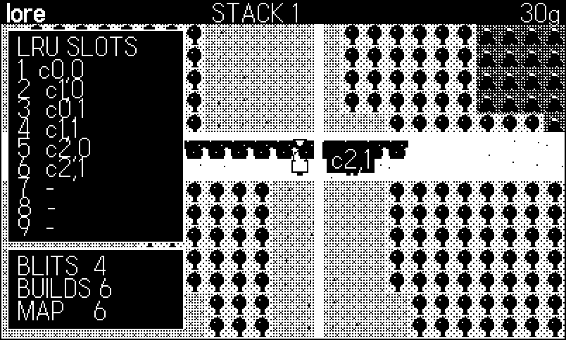
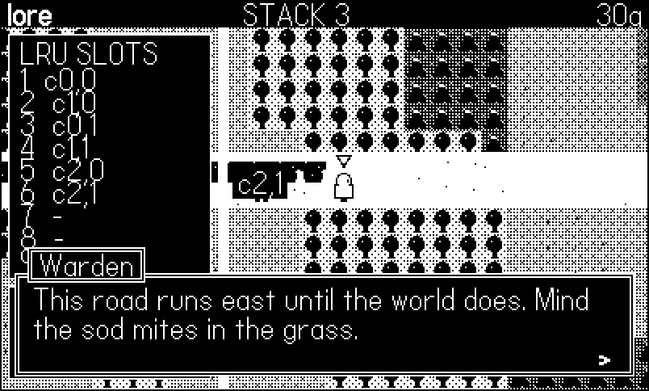
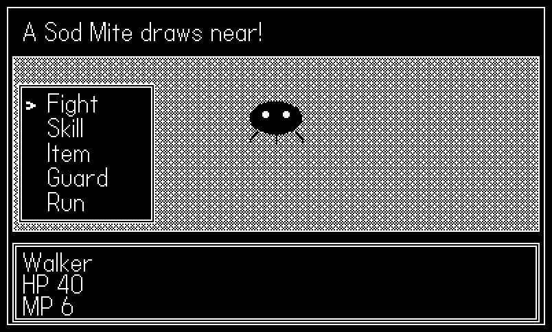
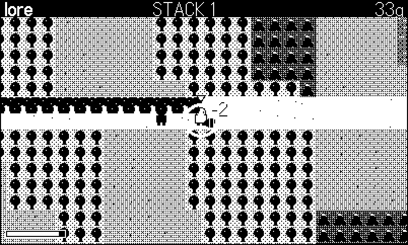
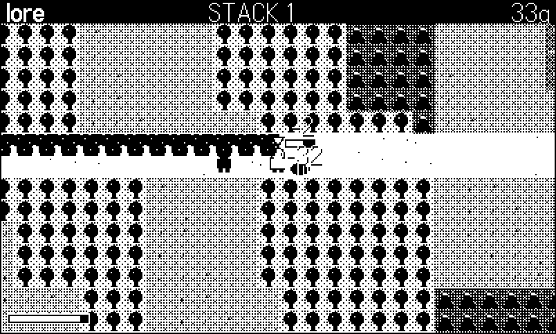

25 Inside Lore: An RPG Engine
An arcade game can forget everything. Close Blast (Chapter 22) and the bombs, the crates and the score go with it; the next run starts from the same blank grid. That amnesia is not a limitation, it is the form — the whole point of a cabinet game is that the machine owes you nothing when you walk away. A role-playing game is the opposite form. Its subject is memory: the chest you opened stays open, the guard who told you about the shrine remembers telling you, the shrew who was level 2 an hour ago is level 5 now, and the save file has to be able to say all of that out loud after the console has been asleep for a week. Everything an RPG feels like — scale, consequence, a world that was there before you and will be there after — falls out of one technical commitment: persistent story state over a world too big to hold in your head.
lore/ is the fleet’s fifth and last engine, and it is the one where the interesting problems stop being rendering problems. The other four each own a way of putting pixels on glass — Phosphor owns lines (Chapter 21), Tiles owns the grid (Chapter 22), Voxel owns volume (Chapter 23), Dither owns shade (Chapter 24). Lore’s DESIGN.md opens by saying so, and then claims the remaining ground:
The fleet’s engines own rendering ideas: lines, grid, volume, shade. Lore owns story state over a world: the machinery that makes a 16-bit-era RPG — a big walkable world, people to talk to, a party that grows, and battles in two grammars. […] A game earns Lore if it needs persistent story state — flags, a party, an inventory that survives a save. A game that just wants a tile world belongs in tiles. —
lore/DESIGN.md
Two grammars, because the 16-bit era settled into two and never really picked one. Dragon Quest and Final Fantasy fight in a scene: the field vanishes, enemies line up facing you, and a menu asks what you would like to do about it — turn order, command windows, a battle that is a conversation. Secret of Mana fights in the field: the world never goes away, the sword has a hitbox and a cooldown, holding the button charges a heavier swing, and the enemy telegraphs before it lunges. Chrono Trigger, famously, is the hybrid — monsters visible on the map, battles that begin where you are standing, story beats that interrupt a fight mid-swing. Lore ships both grammars over one shared character sheet, and the hybrid falls out of composing them.
DESIGN.md frames the engine as five hard problems, each with an answer, and that framing is this chapter’s spine: an overworld too big to pre-render, a control flow that a mode string cannot express, cutscenes that are sequential inside a loop that is not, two battle systems that must not fork the stats, and music that has to last longer than a jingle. Then a sixth problem the design document does not list, because it only shows up once you try to ship: how do you smoke-test a thirty-minute game? The chapter’s example, 25-lore, is fourteen core modules vendored verbatim under a demo that is itself the engine’s thesis — a scripted playthrough, walking, talking, fighting both ways, and stopping in six places to have its picture taken.
25.1 One core, three cartridges
The house pattern is the siblings’: a Makefile stages core/*.lua beside games/<name>/* into one flat directory, pdc compiles it, every module is a global table imported in dependency order by a one-line lib.lua. The example’s version of that list, with the book’s scaffolding in front:
import "CoreLibs/graphics"
import "CoreLibs/crank"
import "shots"
import "bookharness"
-- the vendored engine, in core/lib.lua's dependency order
import "lutil"
import "lgfx"
import "lmap"
import "lcam"
import "lact"
import "lkit"
import "lstate"
import "lui"
import "lscript"
import "lparty"
import "lsnd"
import "lmusic"
import "lturn"
import "laction"
-- the demo
import "config"
import "game"
import "input"
import "draw"Four of those modules this chapter will not teach, because earlier chapters already did. lutil.lua is the fleet’s clamp/sign/lerp plus the reentrancy-safe deferred-call scheduler. lgfx.lua is an 8-level Bayer ramp in opaque and black-speckle-overlay forms — Chapter 4’s ladder and Chapter 24’s exactness argument, cut down to the eight levels an RPG’s terrain actually needs. lcam.lua is Chapter 7’s clamped smooth-follow over setDrawOffset, with one addition an RPG demands: Cam.panTo, the scripted pan a cutscene blocks on. lsnd.lua is Chapter 12’s round-robin synth pool. And lact.lua is the actor layer — procedural 4-direction rigs, AABB movement against tile solids in 1px substeps (Chapter 14), and a tile-to-tile grid step for the classic feel, plus stand/wander/patrol/follow behaviours. Note what is not in it: there is no pathfinding. DESIGN.md declares it a non-goal — “no general A* pathfinding beyond straight-line NPC walks (tiles owns BFS if a game needs it)” — which is why Stoat’s rats chase you in a straight line and Clam Jumper’s BFS (Chapter 16) stayed in another repository.
The cabinet starts the same way every engine in this part does:
Kit.run{
init = function()
-- Kit.run seeds from the clock (right for a shipped game);
-- the figure script wants determinism back
if Harness.enabled and Shots and Shots.seed then
math.randomseed(Shots.seed)
end
Game.init()
Kit.push(G.field) -- init MUST push the first state
end,
extra = function(t)
t.stack = #Kit.stack
t.chunkBuilds = Map.builds
t.cacheOk = Cache.ok and 1 or 0
end,
}As in Chapter 22, Chapter 23 and Chapter 24, the core’s own harness.lua stays home: the book’s bookharness.lua (Chapter 18) defines the same Harness global — enabled, count, set, frame — so the vendored Kit.run drives it unmodified. It also assigns Harness.extra, and under the Simulator Harness.shotPath; the book harness declares neither and reads neither, so both writes are inert. One line is new, though, and it is an assertion in Kit.run itself: init must push a state, because a stack-driven cabinet with an empty stack has nothing to update and nothing to draw. In this engine, “what mode are we in?” is answered by Kit.top(), and there must be a bottom.
The demo’s field draw pass is the canonical Lore frame, and it is worth learning as a sequence — the camera bracket, the chunks, the actors, then the canopy over them, then combat overlays, then the HUD outside the bracket:
function Draw.frame()
Cam.apply()
Map.draw(Cam.x, Cam.y) -- 1-4 blits, any world size
Cache.frame(Cam.x, Cam.y) -- the model, for the readout
Act.drawAll() -- y-sorted, stable
Map.drawOverhead(Cam.x, Cam.y) -- canopy over the actors
Action.draw() -- telegraphs, HP bars, the arc
if Game.showCache then Draw.chunkGrid() end
Draw.chargeRing()
UI.drawPopups()
Kit.marker(G.player.x, G.player.y - 16, G.t)
Cam.done()
Draw.hud()
end25.2 Problem 1: the overworld is too big to pre-render
Chapter 22’ central trick is a cost model you can state in one sentence: render the whole map into one image at load, then the terrain costs one blit per frame forever, no matter how ornate the tiles. It works because a Tiles room is screen-sized — 25×15 cells, one 400×240 image, 350 tile blits paid once. Now scale it. A modest 16-bit overworld is 200×200 tiles; at 16 px a tile that is a 3200×3200-pixel image. As a 1-bit Playdate bitmap that is 3200 × 3200 ÷ 8 ≈ 1.28 MB of image data, built by forty thousand tile blits at load, and you have not drawn a single monster yet. The one-blit trick does not degrade at that size; it detonates.
The answer is the oldest one in graphics: don’t render what you cannot see, but cache what you just did. lmap.lua renders the world on demand into chunks and keeps a small pool of them:
Map = {
TILE = 16,
CW = 26, CH = 16, -- chunk size in tiles
CPW = 416, CPH = 256, -- chunk size in px
POOL = 9, -- LRU depth: 3x3 chunks around the camera
W = 0, H = 0, -- map size in tiles
PW = 0, PH = 0, -- map size in px
legend = {},
grid = {},
builds = 0, -- stat: chunk renders since Map.load
tick = 0,
wrap = false,
}The chunk dimensions are the whole design, so read them as arithmetic. A chunk is 26×16 tiles = 416×256 pixels — one screen plus a margin in both axes. At 1 bit per pixel that is 416 × 256 ÷ 8 = 13,312 bytes, about 13 KB. Because a chunk is strictly bigger than the 400×240 screen in both dimensions, the viewport can straddle at most two chunk columns and two chunk rows: the visible set is never more than 2×2 = 4 chunks, at any world size. The pool is nine — a 3×3 block around the camera — which is 9 × 13,312 = 119,808 bytes ≈ 117 KB, and that number does not move whether the world is 120×90 tiles or 2,000×2,000. That is the trade in full: a fixed 117 KB and one chunk render whenever the camera reaches new ground, in exchange for never again asking the machine to hold a world-sized image.
Building a chunk is the tiles trick applied to a 416×256 window:
local function buildChunk(rec, cx, cy)
rec.cx, rec.cy = cx, cy
rec.key = cy * 4096 + cx
Map.builds = Map.builds + 1
gfx.pushContext(rec.img)
for j = 0, Map.CH - 1 do
for i = 0, Map.CW - 1 do
paintCell(i * T, j * T, cx * Map.CW + i + 1,
cy * Map.CH + j + 1)
end
end
gfx.popContext()
rescanOverhead(rec)
end416 tile blits into a pooled image, inside one pushContext. The pool records are allocated once, at first load; buildChunk re-uses one, so a chunk render allocates nothing. The key packs the chunk coordinate into one integer (cy * 4096 + cx), which is what makes the cache lookup a scalar comparison instead of a table probe.
Then the cache proper — a nine-entry LRU with the least-recently-used record chosen in the same pass that looks for a hit:
-- fetch a chunk record, rendering + evicting the LRU one if needed
local function getChunk(cx, cy)
local key = cy * 4096 + cx
local best, bestStamp
for i = 1, Map.POOL do
local r = pool[i]
if r.key == key then
r.stamp = Map.tick
return r
end
if not bestStamp or r.stamp < bestStamp then
best, bestStamp = r, r.stamp
end
end
buildChunk(best, cx, cy)
best.stamp = Map.tick
return best
endMap.tick is a frame counter; every hit re-stamps its record, so the record with the smallest stamp is the one the camera has ignored longest. One linear scan of nine entries does both jobs — find the hit, or find the victim — which is exactly the right data structure at this size. (A hash map plus a linked list would be the textbook LRU and would be slower here: nine comparisons of an integer beat one table allocation, and there is no table allocation anywhere in this loop.)
Drawing is then almost anticlimactic:
-- blit the 1-4 chunks visible from camera top-left (world px); call
-- with the draw offset active (world space). Records the visible set
-- for Map.drawOverhead.
function Map.draw(camx, camy)
Map.tick = Map.tick + 1
local c0x = Util.clamp(math.floor(camx / Map.CPW), 0,
math.max(0, math.ceil(Map.W / Map.CW) - 1))
local c1x = Util.clamp(math.floor((camx + 399) / Map.CPW), c0x,
math.max(0, math.ceil(Map.W / Map.CW) - 1))
local c0y = Util.clamp(math.floor(camy / Map.CPH), 0,
math.max(0, math.ceil(Map.H / Map.CH) - 1))
local c1y = Util.clamp(math.floor((camy + 239) / Map.CPH), c0y,
math.max(0, math.ceil(Map.H / Map.CH) - 1))
visN = 0
for cy = c0y, c1y do
for cx = c0x, c1x do
local rec = getChunk(cx, cy)
rec.img:draw(cx * Map.CPW, cy * Map.CPH)
visN = visN + 1
vis[visN] = rec
end
end
endClamp the camera rectangle to chunk coordinates, fetch each covered chunk (rendering it if it is not resident), blit it at its world position. One to four image:draw calls per frame, forever. Off the top of the code: a camera parked inside one chunk costs 1 blit; a camera straddling a vertical seam costs 2; a camera on a corner costs 4. The demo’s first screen is that claim with a receipt attached (Figure 25.1) — chunk boundaries drawn into the world, a live readout of the nine LRU slots, and the blit and build counts.

MAP row is the engine’s own Map.builds counter, and it agrees with the model — see the callout.
That readout is worth a paragraph of its own, because getting it required a small piece of honest engineering. lmap keeps its pool private (a file-local pool table — correct: nothing outside the module has any business poking at cache records). So the demo does not read the cache; it models it. It replays the same request stream — the chunks the camera covers, in the same order — through its own nine-slot LRU, and then checks its answer:
-- lmap keeps its LRU pool private, so the demo mirrors it: replay
-- the SAME request stream (the chunks the camera covers, in the
-- same order) through the same 9-slot LRU and the model must
-- predict Map.builds exactly. Cache.ok going false would mean the
-- readout below is lying about the engine.
Cache = { slots = {}, tick = 0, blits = 0, builds = 0, ok = true }
function Cache.reset()
for i = 1, Map.POOL do
Cache.slots[i] = { key = -1, stamp = 0 }
end
Cache.tick, Cache.blits, Cache.builds = 0, 0, 0
end
local function touch(key)
local best, bs
for i = 1, Map.POOL do
local r = Cache.slots[i]
if r.key == key then
r.stamp = Cache.tick
return
end
if not bs or r.stamp < bs then best, bs = r, r.stamp end
end
best.key, best.stamp = key, Cache.tick -- evict the oldest
Cache.builds = Cache.builds + 1
end
-- the chunk range lmap will ask for, from the same camera corner
function Cache.range(camx, camy)
local mx = math.max(0, math.ceil(Map.W / Map.CW) - 1)
local my = math.max(0, math.ceil(Map.H / Map.CH) - 1)
local c0x = Util.clamp(math.floor(camx / Map.CPW), 0, mx)
local c0y = Util.clamp(math.floor(camy / Map.CPH), 0, my)
return c0x, Util.clamp(math.floor((camx + 399) / Map.CPW),
c0x, mx),
c0y, Util.clamp(math.floor((camy + 239) / Map.CPH),
c0y, my)
end
function Cache.frame(camx, camy)
Cache.tick = Cache.tick + 1
local c0x, c1x, c0y, c1y = Cache.range(camx, camy)
Cache.blits = 0
for cy = c0y, c1y do
for cx = c0x, c1x do
touch(cy * 4096 + cx)
Cache.blits = Cache.blits + 1
end
end
Cache.ok = Cache.builds == Map.builds
endIf the model’s builds ever disagreed with the engine’s Map.builds, the readout would be lying about the engine and Cache.ok would go false (the HUD prints !! next to the map’s count). It never does, which is the point: the eviction policy is simple enough that an independent reimplementation lands on the same number every frame.
25.2.1 The write barrier, and the layer above the actors
A cache is only as good as its write barrier — the same lesson Chapter 22 drew from Map.set, and Lore’s version has one extra job, because the cell it must repaint lives inside one chunk out of nine:
-- change one cell: updates the grid, repaints the cell inside the one
-- cached chunk holding it (and refreshes that chunk's overhead list);
-- nothing else is invalidated
function Map.set(tx, ty, ch)
assert(Map.legend[ch],
"Map.set: undefined tile char '" .. tostring(ch) .. "'")
local row = Map.grid[ty]
if not row or not row[tx] then return end
row[tx] = ch
local key = math.floor((ty - 1) / Map.CH) * 4096
+ math.floor((tx - 1) / Map.CW)
for i = 1, Map.POOL do
local rec = pool[i]
if rec.key == key then
gfx.pushContext(rec.img)
paintCell((tx - 1) % Map.CW * T, (ty - 1) % Map.CH * T,
tx, ty)
gfx.popContext()
rescanOverhead(rec)
return
end
end
endCompute the chunk key from the tile coordinate, find the one resident record that holds it, open that image, repaint that 16×16 cell, rescan its overhead list. If the chunk is not resident, do nothing at all — and that is not a bug, it is the cache doing its job: a chunk that is not resident will be rebuilt from the (already updated) grid the next time the camera wants it. The grid is the single source of truth; the chunks are a derived view; the write barrier keeps every live view coherent and lets the dead ones regenerate. This is how Stoat opens its gates — a captain dies, a bramble wall becomes walkable road, and the change is one Map.set per cell whether or not the player is looking at it.
The second layer is the canopy. A tile flagged overhead = true is not drawn into the chunk at all; its art is pre-rendered once per legend definition into a transparent 16×16 image, the ground tile named by under is painted into the chunk in its place, and the canopy image is blitted per cell after the actors:
-- draw the overhead layer (canopy cells of the visible chunks) —
-- call AFTER actors, still in world space, same camera as Map.draw
function Map.drawOverhead(camx, camy)
for v = 1, visN do
local rec = vis[v]
for i = 1, rec.on do
rec.oimg[i]:draw((rec.otx[i] - 1) * T,
(rec.oty[i] - 1) * T)
end
end
endEach cached chunk carries a list of its overhead cells (rebuilt on build and on Map.set, never per frame), so the pass is a handful of 16×16 blits over the visible chunks — and the player walks behind the tree line. Two facts make it cheap. First, the art is built once per definition, not per cell: a hundred canopy tiles share one image. Second, the per-chunk cell lists mean the overhead pass never scans the grid; it iterates exactly the cells that exist in exactly the chunks that are on screen.
The visible set is at most four chunks, so why pool nine? Hysteresis. A camera oscillating across a seam — a player pacing back and forth on a chunk boundary, which is exactly what a walkable world invites — would thrash a four-entry cache, rebuilding 416 tiles every time the viewport wobbled a pixel. Nine slots hold the whole 3×3 neighbourhood, so the cache only pays when the camera genuinely leaves ground it was just on. The rule generalizes: size an LRU by the working set plus the motion that revisits it, not by the peak instantaneous demand.
25.3 Problem 2: RPG flow is a stack, not a mode string
Chapter 3 taught the mode enum: a Game.mode string, an if/elseif in update, title / play / over. Every arcade game in this book runs on it, and it is the right tool for a game with a handful of mutually exclusive screens.
Now try to write an RPG with it. The player is walking the field. They press B: the pause menu opens, and the field must stop — but stay visible underneath, because a menu that blanks the world feels like a different program. From the menu they pick Items; an item list opens over the menu, which is still drawn, which is still over the field. They pick a herb; a Use/Discard/Back window opens over that. Now: what is Game.mode? "menu_items_confirm"? And when they back out, who knows which of the three things below should resume? Add a shop that is a dialog that opens a choice that opens a list, add a battle that can interrupt a scripted cutscene, and the enum becomes a state machine with a transition table nobody can hold in their head — the classic sign that you are hand-encoding a stack in a scalar.
So Lore’s cabinet runs an actual stack. lkit.lua:
Kit.stack = {}
function Kit.push(st)
Kit.stack[#Kit.stack + 1] = st
return st
end
function Kit.pop()
local st = Kit.stack[#Kit.stack]
Kit.stack[#Kit.stack] = nil
return st
end
function Kit.top()
return Kit.stack[#Kit.stack]
endSixteen lines, and the whole shape of the engine’s control flow. A state is a table with update, draw, and an optional translucent flag. The loop does two things with the stack, and they are not symmetric:
local function tick()
local dt = (C and C.DT) or 1 / 30
if Input and Input.poll then Input.poll() end
playdate.resetElapsedTime()
Kit.updateShake(dt)
if Kit.toastT > 0 then Kit.toastT = Kit.toastT - dt end
local top = Kit.top()
if top and top.update then top.update(dt) end
Util.runPending(dt)
if Kit.fxUpdate then Kit.fxUpdate(dt) end
updMs = updMs * 0.95 + playdate.getElapsedTime() * 50
playdate.resetElapsedTime()
local n = #Kit.stack
local lo = n
while lo > 1 and Kit.stack[lo].translucent do lo = lo - 1 end
for i = lo, n do
local st = Kit.stack[i]
if st.draw then st.draw() end
end
if Kit.fxDraw then Kit.fxDraw() end
if Kit.toastT > 0 then Kit.drawToast() end
drwMs = drwMs * 0.95 + playdate.getElapsedTime() * 50
Harness.set("updMs", math.floor(updMs * 10) / 10)
Harness.set("drwMs", math.floor(drwMs * 10) / 10)
endOnly the top state updates. Everything below it is frozen — not paused by a flag, frozen by not being called. Drawing walks up from the lowest non-covered state: start at the top and descend while the states are translucent, then draw everything from there up. An opaque state (no translucent) hides everything beneath it; a translucent one lets the layer below show through. That is the entire windowing model, and every window in the engine — every dialog, choice, list, menu, shop, and both battle command layers — is just a table pushed onto it.
The consequences are worth spelling out, because they are the sort of thing you only appreciate after writing the alternative:
The field needs no pause flag.
Game.updatein the demo is the whole field simulation, and it contains no guards at all:game.lua-- The field is ONE state on the cabinet's stack. It only updates -- while it is on top: push a dialog, a menu or a battle above it -- and the world stops -- no pause flag, no mode enum, no -- if-not-paused guards anywhere in this function. function Game.update(dt) G.t = G.t + dt local p = G.player Act.walk(p, Input.mx, Input.my, dt) Act.updateAll(dt) Action.update(dt, Input.aHeld, p) Cam.update(dt) Cam.follow(p.x, p.y, dt) if Input.b then UI.menu() end if Input.frame > C.CACHE_OFF then Game.showCache = false end endPush anything above it and it stops. There is no
if paused then return end, noif UI.isOpen(), noif battleActive— and so there is no way to forget one.Nesting is free. The pause menu pushes a list which pushes a choice; all three are translucent; all three draw, over a field that is still on screen and completely stopped (Figure 25.2).
A battle is just an opaque state.
Turn.statehas notranslucentflag, so pushing it hides the field and pauses it, with no scene-swap machinery whatsoever. The “battle transition” that every RPG engine writes a subsystem for is, here, a table push.
And then the payoff the design document is proudest of. A random encounter fires while a scripted cutscene is walking the player across a meadow. The script is a state; the battle is an opaque state pushed above it; the battle resolves and pops; the script — which was never told any of this happened, and whose coroutine is suspended exactly where it was — is on top again, and the walk continues. From lore/DEVGUIDE.md, the house lesson written the day it first worked:
An OPAQUE Kit state IS the battle swap: pushing
Turn.statehides and pauses the field for free (top-only update + covered draw). A random encounter can fire mid-scripted-walk; the battle stacks above the script state, resolves, pops, and the walk resumes — no special casing anywhere.
Zero lines of code implement that behaviour. It is what a stack is.
25.4 Problem 3: cutscenes are sequential; game loops are not
A cutscene is a sequence: say this, then walk him over there, then fade out, then set the flag, then fade in. A game loop is a function that returns after 33 milliseconds. Writing the first inside the second is the oldest pain in game programming, and the usual answers are all bad: a per-scene state machine (an enum for a thing that is inherently a straight line), a chain of callbacks (a screenplay written inside-out), or a step table with an index (a program counter you maintain by hand).
Lua has coroutines. lscript.lua spends them exactly here. A scripted beat is plain Lua, run in a coroutine, whose primitives block until the engine has finished them — and the result reads like a screenplay, because it is one. Here is the demo’s entire story, verbatim from the example:
-- The playthrough: one coroutine, read top to bottom. Every call
-- blocks until the engine finishes it -- the dialog waits for A,
-- the choice waits for a pick, battle() waits for the scene to
-- pop. The autopilot supplies the A presses (input.lua); a thumb
-- would do just as well.
function Game.story()
Script.run(function()
face(G.warden, "left")
face(G.player, "right")
say("Warden", "This road runs east until the world does. "
.. "Mind the sod mites in the grass.")
local i = ask("Walk on?", { "Walk on", "Rest here" })
if i == 1 then setflag("road_taken") end
toast("A mite bristles in the verge!")
local out = battle("mite")
if out == "win" then setflag("mite_down") end
State.save()
end)
endsay blocks until the player presses A through the dialog. ask blocks and returns the choice. battle blocks until the battle scene pops and returns "win", "lose" or "ran". No callbacks, no indices, no state machine. Here is the same grammar in a shipped game — Slice’s shrine scene, a camera pan, a fade, a story flag, and a pan back, which is what a cutscene actually is:
-- lore/games/slice/game.lua:445
Script.onTrigger("shrine", function()
local wx, wy = Map.cx(C.TRIG_X), Map.cy(C.TRIG_Y)
if hasflag("shrine_lit") then
toast("The shrine is quiet now.")
return
end
pan(wx, wy - 24, 160)
fade(0.7)
wait(0.4)
setflag("shrine_lit")
toast("The shrine hums")
UI.popup(wx, wy - 14, "hum")
fade(0)
panBack()
end)25.4.1 The plumbing under the screenplay
There are exactly two ways a primitive can block, and the whole runner is built from them:
local function resumeWith(v)
rv = v
ready = true
end
local function block()
assert(inside(), "script primitive called outside a script")
return coroutine.yield()
end
local function blockOn(c)
assert(inside(), "script primitive called outside a script")
cond = c
return coroutine.yield()
endresumeWith(v) is the callback-style resume: hand it to a system that will call you back — a dialog box, a fade, a battle — and it stashes the return value and raises a ready flag. blockOn(cond) is the predicate-style resume: hand it a function of dt that reports when the wait is over, and the runner polls it. Every primitive is one line of setup plus one of these:
function say(who, text)
UI.dialog(who, text, resumeWith)
block()
end
function ask(text, options)
UI.choose(text, options, resumeWith)
return block()
endUI.dialog pushes a window whose callback is resumeWith; say yields; the coroutine is suspended inside UI.dialog’s call site until that window pops. ask is the same with a value coming back. wait(s) is a blockOn that counts down; walk(actor, {tx=, ty=}) is a blockOn on a walk job the runner steps every frame; pan is a blockOn on Cam.panning.
The other half is the script’s own state — because while a script runs, the world must keep breathing (NPCs animate, the camera follows, a scripted walk actually walks) but the player must not have the controls:
-- the script state's update: keep the world alive, then resume the
-- coroutine when its wait is over
local function tick(dt)
Act.updateAll(dt)
Cam.update(dt)
if Script.followTarget and not panSaved and not Cam.panning then
Cam.follow(Script.followTarget.x, Script.followTarget.y, dt)
end
driveWalk(dt)
if not Script.co then return end
if ready then
ready = false
step()
elseif cond then
if cond(dt) then
cond = nil
step()
end
end
end
Script.state = {
kind = "script", translucent = true, update = tick,
}translucent = true, so the field still draws beneath. No draw function of its own — it is a pure control state. And note what it does not do: it never calls the field’s update, which is precisely how a script takes the controls away. The player’s input still arrives; there is simply nothing on top of the stack that reads it. Windows a primitive opens push above this state and freeze it in turn — the dialog is updating, the script is not, the field is not. Three levels of pause, none of them a flag.
Script.run asserts that no script is already active, and that is a design decision, not a limitation. RPG grammar is single-threaded: while the elder is talking, nothing else may talk. The engine’s step triggers and talk handlers drop their dispatch when a script is already running (dispatch returns false), so a player who walks onto a trigger tile during a cutscene does not stack a second cutscene on the first. Concurrency here would buy nothing and cost every bug in the category.
25.4.2 The payoff: the autopilot is a walkthrough
Now the part that makes the coroutine runner more than an ergonomic nicety. Look again at dispatch:
-- run a handler: inline when already inside the script coroutine
-- (playthroughs), as a fresh script when idle, dropped when busy
local function dispatch(fn, a, b, c)
if inside() then
fn(a, b, c)
return true
end
if Script.active then return false end
Script.run(function() fn(a, b, c) end)
return true
endA handler invoked from inside a running script runs inline — in the same coroutine, blocking primitives and all. So a script can call Script.trigger("shrine") or Script.interact(player) and become the scene it triggered. Which means a full playthrough of the game can be written as one script, using the same twenty primitives the game’s own cutscenes use. Slice’s smoke autopilot is exactly that — a walkthrough:
-- lore/games/slice/input.lua:163
Script.run(function()
local p = G.player
-- leg 1: east along the top road, then south to the guard
walk(p, { tx = 112, ty = 9 })
walk(p, { tx = 112, ty = C.GUARD_Y0 - 2 })
-- the guard patrols; chase his cell until the talk lands
for _ = 1, 8 do
local g = G.guard
walk(p, { tx = g.cellX, ty = g.cellY - 1 })
if Script.interact(p) then break end
wait(0.3)
endThat is a test. It is also a cutscene. It is also, read aloud, a strategy guide. Chapter 18 argued that the best autopilot is one that consumes the game’s own systems rather than simulating a thumb; Lore takes it to the end of the line, where the test script and the story script are the same language, run by the same runner, in the same coroutine.
The windows are the other half of the seam. A script can open a dialog, but something has to answer it. Every window in lui — and, crucially, every battle command window in lturn — obeys one contract:
-- INPUT CONTRACT: UI states read the game's global Input table —
-- Input.a/b/up/down must be EDGE-TRIGGERED (true one poll after the
-- press). The smoke autopilot feeds the same fields synthetically, so
-- windows are drivable by script. Crank also scrolls lists (house
-- rule). Every state carries st.ui=true, st.kind, st.sel, st.rows —
-- the introspection surface autopilots steer by.Edge-triggered Input.a/b/up/down, plus an introspection surface: st.kind, st.sel, st.rows. That is enough for one small driver to steer every window the engine has, by reading what is on top of the stack and pressing what a thumb would press:
-- Every window -- dialog, choice, pause menu, item list, AND the
-- battle command window -- answers to the same four flags and
-- exposes the same {kind, sel, rows}. So one driver steers all of
-- them; it presses A on a dialog exactly the way a thumb does.
-- The frame gates are the figure script holding a window open long
-- enough to photograph it.
local gap = 0
local function press(name)
Input[name] = true
end
-- walk the cursor to row `want`, then confirm; true once confirmed
local function seek(st, want)
if st.sel < want then
press("down")
elseif st.sel > want then
press("up")
else
press("a")
return true
end
return false
end
local function drive(top, f)
local k = top.kind
if k == "dialog" then
if f < C.UI_GO then return false end
press("a")
elseif k == "bcmd" or k == "btarget" then
if f < C.BATTLE_GO then return false end
press("a") -- row 1 is Fight; one foe needs no target
elseif k == "choose" then
if Auto.step ~= 2 then
if f < C.UI_GO then return false end
press("a")
else
if f < C.CHOOSE_BACK then return false end
if seek(top, 3) then Auto.step = 3 end -- Back
end
elseif k == "menu" then
if Auto.step == 0 then
if f < C.MENU_A then return false end
press("a") -- row 1 is Items
Auto.step = 1
else
press("b")
end
elseif k == "list" then
if Auto.step == 1 then
if f < C.LIST_A then return false end
press("a")
Auto.step = 2
else
press("b")
end
else
press("b")
end
return true
end
local function uiDrive(top, f)
gap = gap + 1
if gap < 6 then return end
if drive(top, f) then gap = 0 end
endFigure 25.3 is that driver holding a dialog open for its photograph. The typewriter reveals two characters a frame; A completes the page if it is still typing, advances if there is more, and pops the window if there is not — the classic three-way A button, in fourteen lines:
st.update = function(dt)
if st.chars < st.total then
st.chars = math.min(st.total, st.chars + 2)
if Input.a or Input.b then st.chars = st.total end
return
end
if Input.a or Input.b then
Harness.count("saidLines")
if st.page + DLG.ROWS <= st.n then
st.page = st.page + DLG.ROWS
st.chars, st.total = 0, pageTotal()
else
Kit.pop()
if cb then cb() end
end
end
end
say("Warden", …) — a translucent dialog state over the still-visible, completely frozen field. The nameplate is a second panel; the > glyph says the page is fully typed and waiting for A. The autopilot will press it at frame 250, because the figure script told it to wait that long.
25.5 The ledger: what a save file actually is
Every one of those primitives — setflag, give, giveGold, markOpened — writes to one place. lstate.lua is the story ledger: flags, named counters, the party roster, the inventory, gold, quest stages, and the set of chests and doors you have already opened. It is deliberately dull, and it has exactly one interesting idea, which Chapter 17 introduced as a trap and this engine treats as a design constraint. Chest persistence is keyed by map plus cell:
-- ---- chest/door persistence (string keys: the vault lesson) ---------------
local function okey(map, tx, ty)
return map .. ":" .. tx .. ":" .. ty
end
function State.opened(map, tx, ty)
return State.openedSet[okey(map, tx, ty)] == true
end
function State.markOpened(map, tx, ty)
local k = okey(map, tx, ty)
if not State.openedSet[k] then Harness.count("chestsOpened") end
State.openedSet[k] = true
endLook at okey: the key is a string, "world:111:48", and it is a string on purpose. playdate.datastore round-trips through JSON, where dictionary keys are strings by definition — so a set keyed by integers (or by a {x, y} table) goes out one shape and comes back another, and the chest you looted an hour ago is mysteriously full again after a reload. Building the key as a string at the write means the in-memory ledger and the on-disk ledger are the same object, and the round trip is a no-op. The same rule governs everything the save touches: scalars, string-keyed dictionaries, contiguous arrays, and nothing else. It is why lparty keeps a member’s growth and learn tables in a side registry rather than in the member table — those are functions of the character’s definition, not its state, and putting them in the save would be putting a schema in a database row.
The save itself is a versioned envelope, and the load is a single gate:
function State.save()
playdate.datastore.write({
v = 1,
flags = State.flags,
counters = State.counters,
party = State.party,
inv = State.inv,
gold = State.gold,
opened = State.openedSet,
quests = State.quests,
}, State.FILE)
Harness.count("saves")
end
-- replaces the live ledger from disk; false (untouched) if no/old save
function State.load()
local env = playdate.datastore.read(State.FILE)
if not env or env.v ~= 1 then return false end
State.flags = env.flags or {}
State.counters = env.counters or {}
State.party = env.party or {}
State.inv = env.inv or {}
State.gold = env.gold or 0
State.openedSet = env.opened or {}
State.quests = env.quests or {}
return true
endenv.v ~= 1 and the load refuses, leaving the live ledger untouched — the version check Chapter 17 argued for, doing the one job it exists to do. State.autosave is the hook warp() fires on every map change, so the game saves at the doors of things, which is where players expect it. The demo’s story script exercises the write end — two flags and a battle, then State.save(). Slice’s autopilot closes the loop: after saving from the pause menu it calls State.load() and asserts that the flag, the purchased torch and the opened chest all came home, setting a loadOk counter the smoke run checks. A save that is never loaded in a test is not a tested save.
25.6 Problem 4: two battle grammars, one character sheet
Here is where an RPG engine usually forks. The turn-based battle system grows its own notion of attack power; the field-combat system grows another; a month later a sword that reads +3 ATK in the menu does +3 in the scene and +5 in the field, and nobody can say which is the bug. Lore’s answer is a rule, not a subsystem: stats, items, skills and all damage arithmetic live in lparty.lua, and both battle modules call into it. The player of an action game is Party.member(1); the sword in his hand is member.equip.weapon; the number that comes out of a field swing is computed by the same function as the number that comes out of a menu command.
The formulas are canon, and they are printed in the module header so that a designer can read them without reading the code:
-- THE FORMULAS (canonical; both battle modules call these):
-- physical dmg = floor((atk*2 - def) * U[0.875..1.125]), min 1;
-- crit 1/16 -> x1.5 (before floor); miss chance =
-- clamp(dAgi / (aAgi*16), 0, 0.5) — equal AGI = 1/16,
-- agile foes dodge more. Guard halves the final hit.
-- skill amt = floor(power * U[0.875..1.125] * elem), min 1,
-- elem = target.elems[skill.element] or 1; skills never
-- miss. Heals use the same variance (no element).
-- xp Party.next(lvl) = 10*lvl*lvl total xp reaches lvl+1
-- (10, 40, 90...). A level adds growth, refills hp/mp
-- by the gained amount, learns learn[lvl].
-- poison max(1, floor(maxhp/16)) per battle round or per 8
-- field steps; never drops a member below 1 hp.
-- sleep skip the turn; 1/3 wake roll per own turn, certain
-- wake after 3. Guard lasts until the next command.And here is the arithmetic itself, which is one screen of code and the combat balance of every game in the package:
-- one physical attack roll -> dmg, crit, miss (see header formulas)
function Party.attack(atk, dfn, aAgi, dAgi, guarded)
local miss = Util.clamp(dAgi / math.max(1, aAgi * 16), 0, 0.5)
if math.random() < miss then return 0, false, true end
local dmg = (atk * 2 - dfn) * (0.875 + math.random() * 0.25)
local crit = math.random(16) == 1
if crit then dmg = dmg * 1.5 end
if guarded then dmg = dmg * 0.5 end
dmg = math.floor(dmg)
if dmg < 1 then dmg = 1 end
return dmg, crit, false
end\[ \mathrm{dmg} = \left\lfloor (2\,\mathrm{atk} - \mathrm{def}) \cdot U[0.875,\,1.125] \cdot c \cdot g \right\rfloor, \quad c = \begin{cases}1.5 & \text{w.p. } 1/16\\ 1 & \text{else}\end{cases}, \quad g = \begin{cases}0.5 & \text{guarding}\\ 1 & \text{else}\end{cases} \]
with a floor of 1, and a miss rolled first:
\[ P(\text{miss}) = \mathrm{clamp}\!\left(\frac{\mathrm{agi}_{d}} {16\,\mathrm{agi}_{a}},\ 0,\ 0.5\right). \]
Three things fall out of those two lines that are worth naming. The atk * 2 - def shape is the Dragon Quest lineage: defence subtracts linearly, so a defence stat that catches up with twice your attack reduces you to chip damage (the min-1 floor is what stops a wall from being literally invulnerable), and the ±12.5 % band is enough variance to make repeated fights feel alive without ever making them unpredictable. Equal-AGI combatants miss one swing in sixteen — \(\mathrm{agi}_d / 16\,\mathrm{agi}_a = 1/16\) — which is the classic feel; a foe twice as agile as you dodges one in eight; the 0.5 clamp stops a speed-demon boss from becoming untouchable. And levelling is the pure quadratic every 8-bit RPG used:
-- total xp at which lvl+1 is reached
function Party.next(lvl)
return 10 * lvl * lvl
end\(\mathrm{next}(\ell) = 10\ell^2\) — 10 total XP to reach level 2, 40 for 3, 90 for 4, 250 for 6. Quadratic because the rewards grow roughly linearly with level, so a quadratic requirement produces the familiar gentle deceleration: each level takes a bit longer than the last, but never so much longer that the game turns into a job.
25.6.1 The scene grammar: lturn
lturn.lua is the Dragon Quest front view, and its entry point is the proof of Problem 2:
-- push the battle scene; done(outcome) fires after the state pops.
-- outcome: "win" | "lose" | "ran"
function Turn.start(group, opts, done)
assert(not Turn.active, "Turn.start: a battle is already up")
if not slots then makeSlots() end
opts = opts or Turn.defaults
local ids = resolveGroup(group)
B.nfoe = math.min(#ids, MAXF)
for i = 1, MAXF do slots[i].live = false end
for i = 1, B.nfoe do
local d = Party.bestiary[ids[i]]
assert(d, "Turn.start: no bestiary entry '"
.. tostring(ids[i]) .. "'")
local s = slots[i]
s.id, s.name = ids[i], d.name or ids[i]
s.maxhp, s.hp = d.hp, d.hp
s.atk, s.def, s.agi = d.atk, d.def, d.agi
s.mp = d.mp or 0
s.skills, s.ai = d.skills, d.ai or "basic"
s.xp, s.gold = d.xp or 0, d.gold or 0
s.drop, s.elems = d.drop, d.elems
s.live, s.foe, s.healed = true, true, 0
s.x = 200 - B.nfoe * 28 + (i - 1) * 56 + 4
s.img:clear(gfx.kColorClear)
if d.artFn then
gfx.pushContext(s.img)
d.artFn(48, 48)
gfx.popContext()
end
end
B.opts, B.done = opts, done
B.phase, B.t = "intro", 0.7
B.mqn, B.mqi = 0, 0
if B.nfoe == 1 then
setMsg("A " .. slots[1].name .. " draws near!")
else
setMsg("Foes draw near!")
end
Turn.active = true
Harness.count("battles")
if opts and opts.music then Music.stinger(opts.music) end
Kit.push(Turn.state)
endRead the last line. Kit.push(Turn.state) — that is the whole battle transition. The state is opaque, so the field vanishes and stops; enemy portraits are rendered once per encounter from the bestiary’s parametric artFn into four pooled 48×48 images; command windows are pushed above the scene as ordinary lui-contract states, which is why the autopilot that drives dialogs also drives battles without learning anything new (Figure 25.4).
Turn order is AGI with a jitter, sorted descending — insertion sort, because the queue is at most eight entries and insertion sort on a tiny nearly-sorted list is faster than anything with a partition in it:
local function buildOrder()
for i = 2, B.qn do
local q = B.queue[i]
local j = i - 1
while j >= 1 and B.queue[j].init < q.init do
B.queue[j + 1] = B.queue[j]
j = j - 1
end
B.queue[j + 1] = q
end
endEach combatant’s initiative is \(\mathrm{agi} \cdot U[0.75, 1.25]\), so a 25 %-faster party member usually goes first and occasionally doesn’t — enough randomness to make speed a tendency rather than a lock. Enemy AI is three lines of policy per archetype (basic attacks, caster spends MP on its first damage skill, sly heals itself below half health, at most twice), and escape is \(\mathrm{clamp}(\mathrm{agi}_p / (\mathrm{agi}_p + \mathrm{agi}_f) +
0.15,\ 0.25,\ 0.95)\) against the fastest living foe — you can always try to run, and you can never be sure.

artFn; the message line, the party status row, and the Fight/Skill/Item/Guard/Run command window — itself just another state above the battle, speaking the same Input contract as a dialog box.
The last five lines of the module are the seam that ties everything together:
-- the wave-3 seam closes: script battle(group) and lenc both land
-- here (games may still override for custom scenes)
Script.battleHook = function(group, done)
Turn.start(group, nil, done)
endScript.battleHook is the indirection that lets lscript call battle("mite") without knowing that lturn exists — and it is the same hook lenc fires when a random encounter trips or a visible roamer catches you. Scripts, step-counted encounters and Chrono-style map monsters all land in one scene, and a game that wants a custom battle (a scripted duel, a boss with rules) overrides one function.
25.6.2 The field grammar: laction
laction.lua is Secret of Mana on the same sheet. A weapon is a hitbox, a cooldown, and a charge curve; the swing is a pooled rectangle thrown in front of the player’s facing edge:
local function swing()
cool = wdef.cooldown or 0.35
swingT = 0.1
Harness.count("swings")
Snd.play("square", 700, 0.05, 0.15)
local dx, dy = Act.DX[player.dir], Act.DY[player.dir]
local len = (wdef.arc and wdef.arc.len) or 14
local wid = (wdef.arc and wdef.arc.wid) or 18
if dx ~= 0 then
hb.w, hb.h = len, wid
hb.x = player.x + (dx > 0 and player.hw or -player.hw - len)
hb.y = player.y - wid / 2
else
hb.w, hb.h = wid, len
hb.x = player.x - wid / 2
hb.y = player.y + (dy > 0 and player.hh or -player.hh - len)
end
local mult = 1
if wdef.charge then
mult = 1 + (wdef.charge.mult - 1) * Action.charge01
end
local m = Party.member(1)
for i = 1, #foes do
local e = foes[i]
local f = e.fd
if f.iT <= 0 and boxHits(hb, e) then
local dmg, crit, miss = Party.attack(Party.atkOf(m),
f.def, Party.agiOf(m), f.agi, false)
if miss then
UI.popup(e.x, e.y - 16, "miss")
else
dmg = math.floor(dmg * mult)
f.hp = f.hp - dmg
f.iT = 0.25
UI.popup(e.x, e.y - 16,
(crit and "*-" or "-") .. dmg)
Kit.shake(0.12)
hitstop = 2
Act.move(e, dx * 10, dy * 10) -- knockback
f.st, f.t = "recover", 0.3
Snd.play("noise", 400, 0.06, 0.25)
end
end
end
endEvery number in that function comes from somewhere shared: Party.atkOf(m) reads the same equipment the pause menu shows, Party.attack is the same roll lturn makes, the foe’s def and agi come from the same bestiary table the scene battle builds portraits from. The action-specific parts are the feel parts — hitstop = 2 freezes the world for two frames on contact (Chapter 15’s hitstop, at engine level), f.iT = 0.25 gives the foe a quarter-second of invulnerability so a fast weapon cannot machine-gun it, and Act.move(e, dx * 10, dy * 10) knocks it back through the tile collision system, so a foe cannot be punched into a wall.
The charge meter is the SoM signature, and it has a Playdate twist:
if wdef and player then
if held then
charging = true
chargeT = chargeT + dt
end
if charging then -- crank wind-up: 1 rev = 1 full charge
local crank = playdate.getCrankChange()
if crank and crank ~= 0 then
local full = (wdef.charge and wdef.charge.time) or 1
chargeT = chargeT + math.abs(crank) / 360 * full
end
end
local full = (wdef.charge and wdef.charge.time) or 1
Action.charge01 = Util.clamp(chargeT / full, 0, 1)
if charging and not held then
if cool <= 0 then swing() end
charging, chargeT = false, 0
Action.charge01 = 0
end
endHold the button and chargeT accumulates; Action.charge01 is the normalized fill the HUD draws; release and the swing goes out at \(1 + (\mathrm{mult} - 1)\cdot\mathrm{charge01}\) times damage. And getCrankChange folds into the same accumulator: one full revolution of the crank equals one full charge, so a player who wants to wind up faster can wind up literally (Chapter 10). It is optional, it costs four lines, and it is the kind of thing that only occurs to you on this hardware.


arc.len = 14 pixels along the facing, arc.wid = 18 across it, thrown from the player’s edge — drawn for the three frames the swing is live. The -32 popup is Party.attack doing the same arithmetic it does in a menu battle, and the world is frozen for two frames of hitstop.
lturn is a state. laction is not. Field combat has no state of its own at all: Action.update(dt, held, player) is called from the game’s field update, and Action.draw() from the game’s field draw. It is a system the field owns, not a mode you enter.
That asymmetry has a consequence you get for free and a consequence you have to design around, and both are load-bearing. The free one: because Action ticks inside the field’s update, anything that pushes a state over the field freezes the combat — open the pause menu mid-swing and the sword hangs in the air; run a cutscene and the monsters stop where they stand. Nobody wrote that. The one to design around: for exactly the same reason, field combat cannot run under a script, because Script.run suppresses the field update that ticks it. Slice’s autopilot therefore ends its playthrough script before the action leg and drives the hunt from Input.poll phases instead — and Stoat’s Rat King exploits the same fact deliberately, as the next paragraph shows. When a subsystem’s position in the stack determines when it runs, that position is part of its API. Write it down.
And that is the Chrono Trigger hybrid, with no hybrid engine in it. Field combat plus a script beat, composed: Stoat’s Rat King is two stacked spawns, and killing the first one runs a scripted parley while the second is already standing there, frozen solid because a script state is on top of the field:
-- lore/games/stoat/game.lua:81
onKing1 = function()
creditKill("warren")
State.set("king1_dead")
G.king = Game.spawnKing(2) -- rises under the parley, frozen
if not Script.active then Script.run(Story.parley) end
endThe king talks, offers you a choice, and rises desperate — and no overkill damage can skip the beat, because stage 2 exists before the dialogue starts. Mid-fight story, on an action engine, in five lines.
25.7 Problem 5: RPGs need more than a jingle
Chapter 13’s step sequencer — a 16-step loop, clock-accumulated so it never drifts — is the right size for an arcade game and much too small for an RPG. Sixteen steps is two seconds. Loop it for a forty-minute dungeon crawl and you have written a hold-music track.
lmusic.lua grows the same clock two tracker limbs: patterns and an order list. A song is a table of named 16-step patterns plus a sequence of pattern names — order = { "A", "A", "B" } is a three-bar song with a variation on the third — and four voices (bass on triangle, lead on square, pad on sine, hat on noise, mixed fleet-quiet). A step is a sixteenth note: \(\mathrm{stepDur} = 60 /
\mathrm{tempo} / 4\) seconds, accumulated against dt in the same zero-drift while loop Chapter 13 derived. At a hundred beats per minute one 16-step pattern is 2.4 seconds — but three patterns behind order = { "A", "A", "B", "A", "C", "B" } is a fifteen-second phrase that develops, from six words of data and no extra notes.
The interesting function is the one an RPG cannot do without:
function Music.play(song)
saved = nil
start(song)
end
function Music.stop()
cur, saved = nil, nil
end
function Music.stinger(song, once)
Harness.count("stingers")
if cur and not cur.stinger then saved = cur end
start(song, once, true)
end
function Music.resume()
cur = saved
saved = nil
endMusic.stinger(song) interrupts the current song and saves its playhead — song, order index, step index, clock — so Music.resume() puts it back mid-phrase, exactly where the encounter cut it off. And look at the guard: if cur and not cur.stinger then saved = cur end. The playhead is saved only if the thing being interrupted is not itself a stinger. That one condition is what makes the standard RPG audio sequence compose without a stack:
- Field theme is playing, halfway through pattern B.
- A monster appears →
Music.stinger(battle). The field theme’s playhead is saved. - You win →
Music.stinger(fanfare, true). The battle song is playing, and it is a stinger, so the saved slot is left alone. - The fanfare’s order list finishes one pass;
once = truemeans it auto-resumes — and what resumes is the field theme, halfway through pattern B.
Two songs deep, one saved playhead, no stack, no reference counting. It is the smallest possible mechanism that gets the behaviour, and finding it took one line and the discipline to notice that the interrupting song is never the one you want back.
The other rule music taught the engine: it must tick under every state — field, script, dialog, battle, game over — so it cannot live in any game update. It chains onto the cabinet’s above-the-stack hook:
-- tick above the whole state stack (after lui's popup/fade fx)
local prevFx = Kit.fxUpdate
Kit.fxUpdate = function(dt)
if prevFx then prevFx(dt) end
Music.update(dt)
endKit.fxUpdate runs every frame no matter what is on top (lui hosts the fade and the damage-popup pool there too; lmusic chains itself after whatever was already installed). If a thing must not stop when the game stops, it does not belong in the game’s update — a rule that generalizes far past music.
25.8 Testing an RPG
Every other engine in this book is smoke-tested by a bot that mashes buttons well (Chapter 18). That approach dies here, and it dies early. Shrew takes about ten minutes to beat: you must hear out an elder, buy a specific item, use it from a menu, find a chest in the western ferns, return a lost oar to a ferrier, take her boat across a river, grind a marsh until you are level 4, cross a dungeon, find a brass key on floor 1, open a door on floor 2, and beat the Mole Tyrant. No amount of random input reaches step three. And the failure is not “the bot loses” — it is that the bot never reaches the code you changed, so your smoke run is green and meaningless.
Lore’s answer is two-part.
Part one: the autopilot is a walkthrough — the payoff from Problem 3, cashed. Because handlers called inside a running script run inline, a playthrough script can talk to the elder, buy from the shop, and walk into the boss, using the story’s own primitives; and because every window exposes {kind, sel, rows}, the same driver that answers a dialog answers a battle. Shrew’s bot beats the whole quest. Stoat’s clears three zones, three captains and the Rat King. Slice’s beats the demo and then laps the ring road forever, which is how the chunk cache gets its endurance test.
Part two: run the whole game with no Playdate at all. This is the genuinely novel piece, and it is 180 lines. tools/headless.lua is a stubbed SDK — playdate.graphics with every draw call a no-op, images that are {width, height} tables, silent synths, buttons that are never pressed — plus an import shim that resolves the game’s modules from disk, under system Lua 5.4:
lua tools/headless.lua shrew 60000Two seconds later you have the game’s final heartbeat and a pass/fail against a table of per-game counter minimums. No Simulator, no window, no 30 fps ceiling; the game’s logic — every flag, every script beat, every damage roll, every save — runs at whatever speed your laptop can manage.
The detail that makes it more than a toy is the datastore. Playdate’s playdate.datastore round-trips through JSON, and JSON has opinions: dictionary keys become strings, and a table that is not a contiguous array does not come back as one. A save bug caused by that conversion is invisible in memory and fatal on load — which is exactly the class of bug a stub can simulate:
-- lore/tools/headless.lua:97
datastore = {
write = function(t, name)
disk[name or "data"] = jsonify(t)
end,
read = function(name)
local v = disk[name or "data"]
return v and jsonify(v) or nil
end,
delete = function(name) disk[name or "data"] = nil end,
},jsonify walks the table, stringifies every dictionary key and preserves contiguous arrays — so State.opened keyed "world:111:48" survives, and a set keyed by integers would quietly come back with different keys, and the headless run would catch it. That is the “vault lesson” from Chapter 17, promoted from a comment to an executable assertion. The harness found real bugs this way, including a story blocker that had nothing to do with saving at all: an escorted NPC parked on the player’s walking line kept re-triggering the interaction probe, so the chest behind him could never be opened. Two seconds per run means you find that on the run you introduce it.
25.8.1 The war story: the bot that farmed the boss
And now the honest half, because a testing section that only lists successes is an advertisement.
Stoat’s autopilot beat every zone, cleared every captain, and then — in the Rat King’s warren — ran for twenty thousand frames and stopped finishing. The heartbeat was the confession: 57 warren kills, level 8, boss at full health. Nothing had crashed. Nothing was stuck. The bot was fighting extremely well and would have gone on fighting forever, because the king’s mechanic is to summon pups, and the bot’s targeting rule was hit the nearest foe. There is always a nearer foe than the king. The bot had discovered an infinite XP farm and was using it.
That is the shape of the bug worth internalizing: a bot that never finishes looks exactly like a bot that is patient. No error latched, no counter froze, no screenshot looked wrong — every individual number was healthy and rising. Only the ratio was insane, and only a counter that should have moved and didn’t (kingDown) said so.
The obvious fix — beeline the boss, ignore the adds — got the stoat chewed to death by the swarm. The rule that works is in the shipped source, kept with its scar tissue:
-- lore/games/stoat/input.lua:166
-- Captains outrank their adds -- but only at range. The king summons
-- pups forever, so a plain nearest-foe pick grinds spawns and never
-- closes on him; beelining past the swarm gets you chewed. Rule:
-- clear an add that is already in your face, otherwise go for the boss.
local SWARM2 <const> = 40 * 40Clear an add within 40 pixels; otherwise the boss is the target, however far away it is. And the sting in the tail: this bug hid from every headless seed. Kit.run seeds math.randomseed from the clock, so the Simulator run and the headless run explore different random worlds — the headless seeds happened to produce summon patterns the nearest-foe rule could win through. From the DEVGUIDE:
Corollary: this class of bug hides from headless seeds. The Simulator seeds from the clock, so run the real thing before you believe a playthrough.
Fast tests and real tests are not substitutes. Headless catches logic in two seconds; the Simulator catches the game.
setRefreshRate(0) is not fast any more
Every smoke harness in this book unthrottles the Simulator with playdate.display.setRefreshRate(0) and assumes the run then goes as fast as the machine allows. On SDK 3.0.6 it does not: Lore’s runs cap at roughly 40–45 fps of wall clock regardless of workload — measured with sub-millisecond updMs/drwMs, and muting the audio changed nothing. The consequence is budgetary, and it will bite the first time you write a smoke test for a long game: a 60,000-frame RPG playthrough is not “a couple of minutes”, it is about 25 minutes. Size your smoke windows for real time, put the long playthroughs on a separate target from the quick ones, and let tools/headless.lua — which has no refresh rate at all — carry the fast loop.
25.9 The three games
25.9.1 Slice: the vertical slice
Slice is the engine’s dev game and its living demo: a 120×90 hash-noise overworld with a stamped ring road, a canopy walk-behind band, four NPCs, a talkable guard who escorts you shrine-ward, a scripted shrine scene, a merchant with a three-item shop, one persistent chest, the pause menu, save/load, meadow and fern encounter zones, and a bramble hare that must be felled with charged stick swings. It is not a game and never will be; it is the thing every engine should have and most don’t — one cartridge that exercises every seam, so that a change to the core has somewhere to fail loudly. Its clever trick is its smoke run: the autopilot plays the whole story, proves the save/load round trip against the live ledger, kills the roamer, warps home, and then laps the ring road forever — and chunkBuilds climbing past 9 on every lap is the LRU cache’s own proof of life.
25.9.2 Shrew: the Dragon Quest grammar
Pip, a shrew knight, must eat half her body weight — twelve grams — by dawn, because shrews really do starve to death in a day. Every bug she defeats is dinner: battles pay grams alongside XP and seeds (the currency), and the dawn meter is the health bar of the quest. There is an overworld with a boat-gated river, a town with a shop and an inn and five flag-gated NPCs, a two-floor burrow with chests and a brass key and a locked door, and the Mole Tyrant hoarding the Grub Cellar at the bottom. Its clever trick is how little of that needed engine support: grams are one named counter in the story ledger, the boat is player.swims = true (which is a single check inside Act’s tile-blocking test), and the entire economy hangs off the battle seam — one wrapper around Script.battleHook that reads the bestiary, adds up the meal, and hands the outcome back:
-- lore/games/shrew/game.lua:164
local opts = boss and { music = Sfx.songs.boss,
fanfare = Sfx.songs.fanfare } or nil
G.bossFight = boss -- the autopilot opens bosses with Curl
Turn.start(group, opts, function(outcome)
G.bossFight = false
if outcome == "win" then GS.addGrams(grams) end
done(outcome)
if outcome == "lose" and not Script.active then
GS.deathFlow() -- scripts handle their own losses
end
end)The whole game’s reward loop is in that closure, and the engine never learned the word “grams”.
25.9.3 Stoat: the Secret of Mana grammar
Ermine, a stoat in winter coat, drives a rat clan out of three field zones — snowy meadow, canopied thicket, dark warren — on one connected 140×60 chunked map before the thaw ruins the winter larders. Fell six rats in a zone and its captain appears; each captain’s death opens a gate (Map.set on a bramble wall) and drops a weapon. Combat is charge-swings, a pounce that dodges projectiles, and enemies that telegraph before they lunge. Its clever trick is the Rat King: a three-phase fight with a scripted mid-fight parley, which exists because of the asymmetry the callout above described — laction lives in the field update, so pushing a script state stops the battle dead, and the king can stand there mid-swing and make you an offer. The other neat move is entirely in the game layer, on engine seams the core never knew it was providing: slingers spawn with aggro = 0 so the game can steer their idle drift itself and keep them at range, and the pounce’s swept hitbox is walked along the dash by hand and then reaped by the engine’s ordinary kill sweep. No core changes; the seams held.
25.10 What you know now
- Lore owns story state over a world — the fifth engine, and the one whose hard problems are systems problems, not rendering ones. A game earns it by needing flags, a party, and an inventory that survives a save.
- An overworld too big to pre-render is drawn from a chunked LRU cache: 26×16-tile chunks of 416×256 px (13,312 bytes each), nine of them (~117 KB) covering any camera position with hysteresis to spare, and 1–4 blits a frame at any world size.
Map.setrepaints one cell inside the one resident chunk that holds it; the canopy layer blits per cell after the actors from per-chunk lists. - RPG flow is a stack.
{update, draw, translucent}tables pushed onKit; only the top updates, drawing walks up from the lowest non-covered state. Menus over lists over dialogs cost nothing to express, the field needs no pause flag, a battle is an opaque push — and a random encounter can interrupt a scripted walk, resolve, and hand the walk back with zero special-casing. - Cutscenes are coroutines.
say,ask,walk,fade,setflag,battleblock viaresumeWith(callback) orblockOn(predicate) and read like a screenplay. Handlers called from inside a script run inline — which is why the smoke autopilot is a walkthrough written in the same primitives, steering every window through one{kind, sel, rows}surface. - Two grammars, one sheet.
lpartyowns the math — \(\lfloor(2\,\text{atk} - \text{def})\cdot U[0.875,1.125]\rfloor\), crit 1/16 at ×1.5, miss \(= \text{clamp}(\text{agi}_d / 16\,\text{agi}_a, 0, 0.5)\), \(\text{next}(\ell) = 10\ell^2\) — andlturn(opaque state, DQ front view, AGI-jittered order) andlaction(hitbox arcs, charge meter, telegraph-lunge AI) both call it.lturnis a state;lactionis a system inside the field update, and that asymmetry is the API: windows freeze field combat by construction, and a script beat mid-fight is the Chrono Trigger hybrid for free. - Long music is patterns plus an order list (
A A B C), and a stinger that saves the interrupted playhead — but only if the thing it interrupts is not itself a stinger, which is the one rule that makes jingle → fanfare → field-resume-mid-phrase compose without a stack. - You cannot smoke-test a thirty-minute game with a joypad-mashing bot. Write the playthrough as a script; run it headlessly under system Lua against a stubbed SDK (including the datastore’s JSON key-stringification, which is where save bugs live); and then run it for real, because the Simulator seeds from the clock and a bot that never finishes looks exactly like a bot that is patient.
The engine and all three games are MIT-licensed at github.com/plaidate/lore — read DESIGN.md first, then lkit.lua’s twenty-line stack, then lscript.lua against a cutscene in games/shrew/script.lua. Then go write a game that remembers you.
And that closes the engines. Five packages, five theses: Phosphor draws lines and nothing else; Tiles makes the grid the single source of truth; Voxel earns its volume by demanding that a game dig, climb, lob or fall; Dither promotes shade from an art trick to a mechanic; Lore keeps a story over a world. They share a cabinet (Kit.run, a fixed 30 fps, C.DT), a discipline (procedural art, zero per-frame allocation, module-per-concern globals), and a harness — and every one of them was proved by games that beat themselves in a headless Simulator before anyone was allowed to say they worked. That is the whole method of this book, and it fits in a sentence: decide what your engine is about, write the sentence down, and then make the machine prove it.